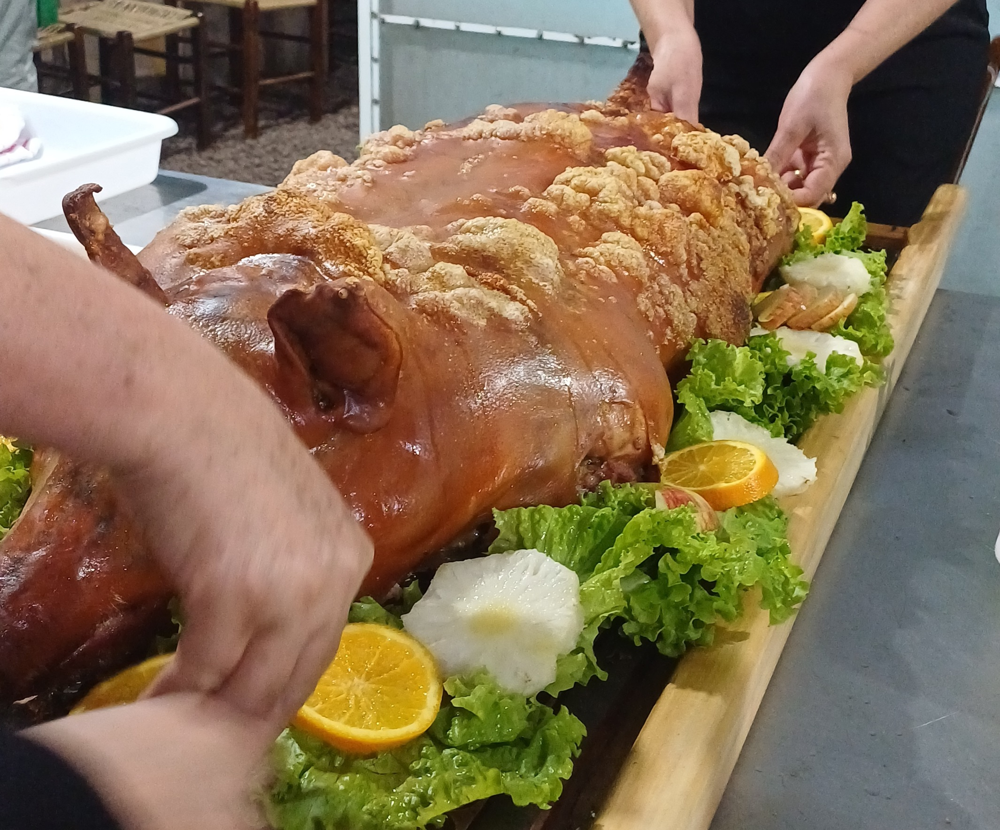

Sobre o Evento
Realizada anualmente em Toledo, a Festa Nacional do Leitão à Pururuca é um dos eventos mais emblemáticos do Paraná, celebrando a excelência da suinocultura paranaense e a gastronomia regional. Durante três dias em agosto, a cidade se transforma em um grande centro de cultura e sabores, atraindo mais de 250 mil visitantes em sua última edição.
Destaque 2025
Edição especial com o "Caminho do Leitão" - roteiro turístico que mostra toda a cadeia produtiva, da fazenda ao prato.
Atrações Imperdíveis
- Degustação do leitão à pururuca premiado
- Feira da Agricultura Familiar
- Oficinas de corte e preparo
- Shows com artistas regionais
- Espaço kids com atividades rurais
Galeria
